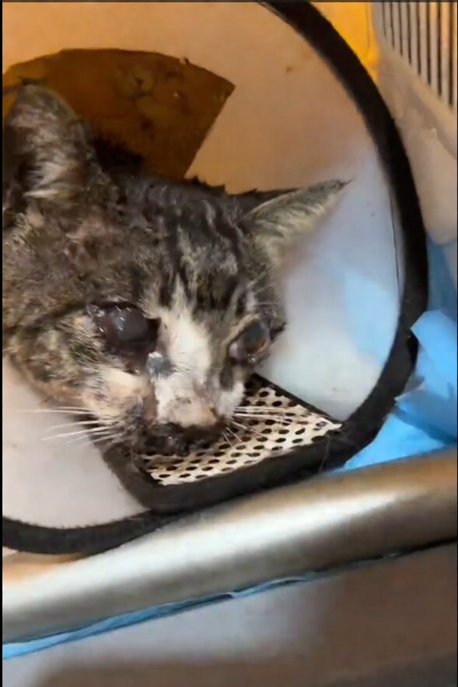

A dor do Loki não pode esperar.

S
SOS Patinhas - Loki
Doação protegida
O Loki está com uma infecção grave nos olhos…
Ele foi resgatado assim, com os olhinhos muito machucados, inflamados e com sinais de uma possível úlcera avançada...
O Loki está com uma infecção grave nos olhos…
Ele foi resgatado assim, com os olhinhos muito machucados, inflamados e com sinais de uma possível úlcera avançada.
Sem tratamento urgente, essa infecção pode piorar rapidamente, causar ainda mais dor e até levar à perda total do olhinho.
Mesmo assim, ele ainda tenta confiar…
O Loki precisa de ajuda agora para não continuar sofrendo.
Se puder, ajude.
Se não puder, compartilhe.
Ele só precisa de uma chance
Quem Somos

Somos um grupo de voluntários do Espírito Santo dedicados ao resgate e cuidado de animais em situação de vulnerabilidade. Não temos apoio governamental — tudo é custeado por doações de pessoas como você.
Nossa missão é garantir alimentação, tratamento veterinário e um lar temporário seguro para cada animal que chega até nós, enquanto buscamos famílias adotantes responsáveis.